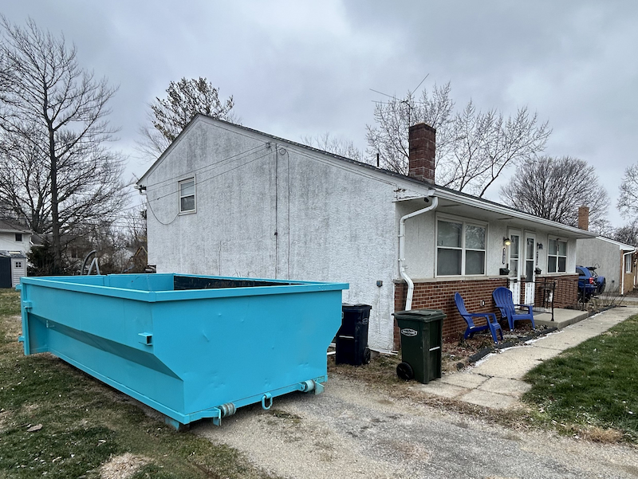

Winter Dumpster Rental in Columbus: How to Handle Ice, Snow & Stay Safe
A comprehensive guide to safely using dumpsters during Ohio winters—from preventing slips on ice to managing snow accumulation and frozen debris. Here's everything I've learned from years of winter deliveries in Central Ohio.

When Winter Projects Can't Wait
Last January, I got a call from a homeowner in Dublin who'd just had a pipe burst in their basement. Water damage had ruined drywall, flooring, insulation—the works. They needed a dumpster immediately, but it was 22 degrees outside with ice on every surface.
"Can you even deliver in this weather?" she asked. "The last company I called said they'd 'try to get there next week when it warms up.'"
Here's the thing about home emergencies: they don't check the forecast first. Pipes burst. Roofs collapse under snow load. Ice dams cause interior damage. Storm damage happens. And when disaster strikes in winter, you can't just wait until spring to clean up.
That's why I delivered her dumpster that same afternoon—and why understanding how to safely use dumpsters during Ohio winters is critical for both emergency situations and planned cold-weather projects.
Quick Answer: Is Winter Dumpster Rental Safe?
Yes, with proper precautions. Winter dumpster rental is completely safe when you understand how to manage ice, snow accumulation, and frozen debris. The key is being proactive about safety measures—clearing ice from walkways, understanding weight considerations with snow, and knowing how to handle frozen materials. Most winter safety issues are preventable with simple preparation.
The Three Winter Challenges Nobody Warns You About
I've been delivering dumpsters through Ohio winters for years now, and I've seen three recurring challenges that catch people off guard. Let's talk about each one—and more importantly, how to handle them safely.
Challenge #1: Ice Around the Dumpster Creates Slip Hazards
This is the most common winter safety issue, and frankly, it's the one that worries me most. Here's what happens:
You rent a dumpster for a renovation project. Snow falls, melts slightly during the day, then refreezes at night. Within 24-48 hours, you've got a sheet of ice on the ground around your dumpster—right where you need to walk while carrying heavy debris.
I've had customers tell me horror stories about slipping while carrying drywall, twisting ankles on black ice, or nearly dropping power tools because they hit an icy patch. These aren't just inconveniences—they're genuine injury risks.
How to Prevent Ice-Related Injuries:
- Salt or sand the area immediately - Before you start loading, treat the entire path from your house/garage to the dumpster. Don't wait until you see ice—be proactive.
- Create a clear, wide path - Give yourself at least 4-5 feet of treated walkway. When you're carrying a heavy load, you need room to adjust your footing.
- Reapply treatment daily - One application isn't enough. If temperatures fluctuate (as they do constantly in Ohio), you need to retreat surfaces every morning.
- Wear proper footwear - This sounds obvious, but I see people loading dumpsters in regular work boots all the time. Get boots with winter traction or slip-on ice cleats.
- Work during warmer hours - If possible, load your dumpster between 11am-3pm when surfaces are least likely to be icy.
- Ask for gravel placement - When you book with us, we can place boards or gravel under the dumpster to improve drainage and reduce ice formation.
Here's what I tell every winter customer: The five minutes you spend salting could prevent a five-month injury recovery. It's not worth the risk.
Challenge #2: Snow Accumulation Eats Your Dumpster Capacity
This one surprises people every single winter. You rent a dumpster, a snowstorm hits, and suddenly you've got 6-12 inches of snow sitting in an empty dumpster. Doesn't seem like a big deal, right?
Wrong. Here's the math that catches customers off guard:
A 14-yard dumpster has approximately 378 cubic feet of capacity. Six inches of snow across the entire bottom surface equals roughly 47 cubic feet of snow. That's 12.5% of your capacity—gone before you've thrown away a single piece of debris.
But it gets worse. Snow adds weight, and weight matters when you're approaching the 2-ton limit included with your rental. Wet, heavy snow can weigh 12-20 pounds per cubic foot. That same 47 cubic feet of wet snow could add 560-940 pounds to your dumpster weight.
Snow Weight Calculator
Light, fluffy snow: 3-7 lbs per cubic foot
Average snow: 7-12 lbs per cubic foot
Wet, heavy snow: 12-20 lbs per cubic foot
Ice: 30-58 lbs per cubic foot
For context: A 14-yard dumpster filled halfway with wet snow could weigh 2,000-3,800 lbs—potentially exceeding your included weight limit before you've added any actual debris.
How to Handle Snow in Your Dumpster:
Option 1: Cover the dumpster - We can provide tarps that fit over the top of your dumpster. Secure them properly (we'll show you how), and snow will slide off instead of accumulating inside.
Option 2: Remove snow before it becomes a problem - If you've got 2-3 inches of light, fluffy snow in your dumpster, you can often shovel it out relatively easily. Once it gets deeper or starts to melt and refreeze, removal becomes much harder.
Option 3: Account for it in your planning - If you're renting during winter and can't cover the dumpster, consider this: that snow is going to melt eventually. If you're keeping the dumpster for 7-14 days and we get snow, just factor it into your capacity planning. You might need to go lighter on your debris loading.
Option 4: Time your rental strategically - Check the 10-day forecast. If a major snowstorm is coming, consider delaying delivery by a few days, or try to complete your project and schedule pickup before the storm hits.
Here's my honest recommendation: If you're renting for more than 3-4 days during winter, get the tarp. It's a small investment that protects your capacity and prevents weight issues. We include them free with winter rentals for exactly this reason.
Challenge #3: Frozen Debris Is Heavier and Harder to Manage
This is the one that catches even experienced DIYers by surprise. Materials behave completely differently when frozen.
I had a customer in Powell doing a basement cleanout last February. Old carpet, padding, some damaged furniture, boxes of junk. Typical stuff. But everything had been sitting in an unheated basement at 30-35 degrees for weeks. When he started loading the dumpster, he discovered:
- The carpet was frozen stiff and couldn't be rolled tightly
- Cardboard boxes had absorbed moisture and frozen together in solid blocks
- Bags of debris had frozen into irregular shapes that didn't stack efficiently
- Everything weighed significantly more than expected due to frozen moisture content
"I thought I'd easily fit this in a 14-yarder," he told me. "But the frozen stuff takes up way more space, and I can't compress anything."
He was right. Frozen materials present three key challenges:
1. Increased Weight from Moisture
Any porous material that's been exposed to moisture and then frozen will weigh more—sometimes dramatically more. Drywall, insulation, carpet, upholstery, cardboard, wood—all of these absorb moisture that then freezes solid.
Regular drywall weighs about 1.6-2.2 lbs per square foot. Water-damaged, frozen drywall? I've seen it hit 4-5 lbs per square foot. That's more than double the weight.
2. Inability to Compress or Break Down Materials
In normal conditions, you can break drywall into smaller pieces, compress cardboard boxes flat, roll up carpet tightly. When everything's frozen solid, you lose that flexibility. You're stuck with the shape and size the materials froze in—which is often the least efficient shape possible.
3. Safety Risks from Unexpected Weight and Rigidity
Frozen materials are unpredictable. Something that looks light might weigh 30-40 pounds because it's saturated and frozen. Or something that should bend might be rigid and awkward to carry. I've had customers strain their backs lifting frozen carpet they assumed would be flexible.
How to Handle Frozen Debris Safely:
Let materials thaw if possible - If you have the space and time, bring frozen materials into a heated area 24-48 hours before disposal. Once thawed, you can compress cardboard, break up drywall, and roll carpet normally. You'll fit far more in your dumpster, and materials will be lighter to handle.
Work in smaller loads - Don't try to carry the same volume you would in summer. Frozen materials are heavier and more awkward. Make more trips with lighter loads to avoid injury.
Get help with heavy frozen items - Frozen carpet, waterlogged insulation, ice-coated materials—these need two people. Don't risk your back trying to handle them solo.
Plan for less efficient space usage - You might fit 30% less debris in a winter dumpster if materials are frozen in awkward shapes. Size up if you're on the fence.
Consider the thaw - Remember: frozen materials will eventually thaw in the dumpster (or at the dump facility). That frozen moisture becomes liquid water. If you've got a dumpster full of frozen materials, expect some water drainage as they thaw. Position accordingly.
Winter Delivery & Service: What to Expect
Let's talk about something most dumpster companies don't want to address honestly: winter service reliability.
I've heard the horror stories from customers. National companies that cancel deliveries because "the driver doesn't want to work in this weather." Local operators who promise delivery but push it back three times because of snow. Companies that deliver late, then charge you for extra days you didn't even have the dumpster.
This business is my life, and I could choose to take winters easy. But here's what I believe: If I'm going to offer dumpster rental, I'm going to offer it year-round, reliably, in all weather. Your emergency doesn't care what season it is, and neither should your service provider.
How We Handle Winter Deliveries
When you book a winter dumpster rental with Streamline Dumpsters, here's what actually happens:
1. We Deliver On Schedule Unless Roads Are Legally Closed
If we confirm a delivery time, we deliver. Period. The only exceptions are:
- Level 2 or 3 snow emergencies where roads are officially closed
- Your specific street/driveway is impassable (we'll call you and discuss options)
- Safety conditions that would damage your property or create liability
Snowing? We deliver. Cold? We deliver. Slushy? We deliver. If other companies can't get to you, call us. We probably can.
2. We Protect Your Driveway More Carefully in Winter
Our trucks are already driveway-safe by design—we use protective boards under every dumpster placement. But in winter, we're even more careful:
- Extra boards/plywood to distribute weight on potentially softened ground from freeze-thaw cycles
- Careful assessment of asphalt and concrete conditions—freeze-thaw can create hidden weaknesses
- Alternative placement suggestions if we see conditions that could damage your driveway
- Communication before placement - We'll talk through options with you on-site if we have any concerns
3. We Provide Winter-Specific Guidance
When you book a winter rental, we'll walk you through:
- Whether you should consider a tarp (usually yes for rentals over 4 days)
- Ice management around the dumpster location
- Weight considerations if you're dealing with frozen or wet materials
- Realistic timing for pickup if weather might delay access
We're not just dropping off a metal box and disappearing. We're partners in making sure your winter project goes smoothly and safely.
4. We Don't Charge Extra for Winter Conditions
Some companies add "winter surcharges" or "weather fees." We don't. Our pricing is our pricing, year-round: $319 for a 14-yard dumpster with same-day delivery, 7 days included, up to 2 tons.
See our transparent pricing guide for complete details on what's included and what's not. There is no catch, no seasonal pricing games, no surprise fees because it snowed.
Winter Project Types: What Works Well (and What Doesn't)
Not all projects are equally suited for winter execution. After years of winter rentals, here's what I've observed:
Projects That Work Great in Winter:
- Interior renovations - Kitchens, bathrooms, basement finishing, drywall work. Debris stays dry, you're working in heated spaces, and you can control the environment. Perfect for winter.
- Emergency cleanouts - Water damage, fire damage, storm damage. You don't have a choice on timing, and these situations require immediate action regardless of weather.
- Estate cleanouts - Often these happen on a timeline that doesn't align with seasons. Winter estate cleanouts work fine if you're loading from an attached garage or can create a covered path.
- Garage/basement cleanouts - Similar to interior renovations. You're working in semi-controlled environments, and most materials stay dry.
Projects That Are Trickier in Winter:
- Roofing projects - Shingles get brittle in cold weather. Ice makes roofs dangerous. If you're doing winter roofing (storm damage, etc.), be extra careful and expect frozen, potentially snow-covered shingles to take up more space.
- Outdoor cleanups - Yard waste, landscaping debris, exterior cleanouts. Materials are often frozen to the ground, covered in snow, or saturated. These are better saved for spring if possible.
- Deck demolition - Frozen wood is harder to break down, and you're working on potentially icy surfaces. Can be done, but requires extra caution.
- Concrete/masonry work - Heavy materials that might be covered in snow or ice. Also, concrete work itself is often delayed until warmer weather for curing reasons.
The One Project Everyone Asks About: Holiday/Post-Holiday Cleanouts
Every December and January, I get calls about this. Family visiting for holidays, huge cleanout project planned, perfect timing to finally clear the attic/basement/garage.
Here's my take: Holiday cleanouts are fantastic—if you plan for winter realities.
The advantages:
- You've got extra hands (family helping)
- You've got time off work
- Starting the new year with a clean, organized space feels incredible
- Dumpster availability is often better in winter (we're less slammed than spring/summer)
The considerations:
- Get the dumpster delivered before the holiday when the weather window is clear
- Set up your ice prevention system early (salt, sand, mats)
- Use a tarp if the dumpster will sit for more than a few days
- Work during the warmest part of each day
- Have realistic expectations about what family members can safely lift in winter conditions
I've seen holiday cleanouts work beautifully. I've also seen them create stress when families didn't account for weather. A little planning makes all the difference.
Realistic Weight Expectations for Winter Debris
Let's get specific about weight, because this is where winter rentals get expensive if you're not careful.
Our standard rental includes up to 2 tons (4,000 lbs) of debris. Overage is $75 per additional ton. In summer, most residential renovation debris comes nowhere close to 2 tons. In winter, you might be surprised.
Materials That Get Significantly Heavier in Winter:
| Material | Normal Weight (per cu ft) | Frozen/Wet Weight (per cu ft) | Notes |
|---|---|---|---|
| Drywall | 50-60 lbs per sheet | 80-120 lbs per sheet | Water damage + freezing dramatically increases weight |
| Carpet & Padding | 2-5 lbs per sq yard | 8-15 lbs per sq yard | Absorbs moisture from basement/garage storage |
| Insulation (fiberglass) | 0.5-1 lb per cu ft | 3-8 lbs per cu ft | Becomes waterlogged easily, freezes solid |
| Wood (framing lumber) | 25-35 lbs per cu ft | 40-55 lbs per cu ft | Moisture content can nearly double weight |
| Cardboard boxes | 3-5 lbs per cu ft | 10-20 lbs per cu ft | Basement storage = moisture absorption + freezing |
| Roofing shingles | 200-250 lbs per square | 250-350 lbs per square | Snow/ice accumulation before removal |
Quick Reference: Will I Exceed 2 Tons?
You're Probably Safe (Under 2 Tons):
- Standard kitchen renovation debris (cabinets, countertops, drywall, flooring) - even if frozen: 1,200-1,800 lbs
- Bathroom remodel (tub, tile, vanity, drywall): 1,000-1,500 lbs
- Garage cleanout (household items, boxes, old furniture): 800-1,400 lbs
- Small deck demolition (200-300 sq ft): 1,500-2,000 lbs
You Might Exceed 2 Tons:
- Full basement cleanout with water-damaged materials: 2,500-4,000 lbs
- Roofing project (1,500+ sq ft): 3,000-5,000+ lbs
- Large renovation with frozen drywall (multiple rooms): 2,200-3,500 lbs
- Flooded basement cleanup: 3,000-6,000+ lbs
If you're unsure, call me. Seriously. I'd rather spend five minutes on the phone helping you estimate weight accurately than have you face a surprise overage fee. Direct access to the owner means you get honest guidance: (614) 636-2343 or Eli@Sl-Dumpsters.com.
Common Winter Dumpster Questions
Can dumpsters freeze to the ground?
Yes, but it's rare and usually only happens during extended cold snaps with specific conditions. If your dumpster sits on wet ground that then freezes solid for multiple weeks, the dumpster can freeze to the surface.
We prevent this by:
- Placing boards/plywood under the dumpster (we do this anyway for driveway protection)
- Choosing placement locations with good drainage
- Picking up within your rental period before extended freezing occurs
In 99% of cases, this isn't an issue. But if you're renting for an extended period (3+ weeks) during a brutal cold spell, mention it when you book so we can take extra precautions.
What if it snows heavily during my rental period?
We'll work with you. If roads are impassable for pickup, we won't charge you for extra days that are weather-related. Once conditions clear, we'll coordinate pickup.
If you need to extend because you couldn't work during a snowstorm, just let us know. We're flexible and reasonable—we live here too and understand Ohio winters.
Should I shovel snow off the dumpster before pickup?
Not necessary unless there's a massive accumulation (12+ inches of heavy, wet snow). Our trucks can handle typical snow loads. If you're concerned about weight, you can shovel, but it's not required.
Can I put snow in the dumpster?
Technically yes, but it's not cost-effective. Snow is heavy (especially wet snow), and you're paying by weight over 2 tons. You're better off piling snow in your yard and using the dumpster for actual debris.
The exception: if you're removing snow that's contaminated with debris (roof snow with shingles, snow with demolition materials mixed in), that goes in the dumpster.
Do you deliver to unsalted/unplowed driveways?
We assess on a case-by-case basis. If your driveway is accessible and safe for our truck, we'll deliver. If it's genuinely dangerous or impassable, we'll discuss alternatives:
- Delaying delivery until you can clear/salt the driveway
- Street placement (if legal and safe)
- Alternative location on your property
We want to deliver to you, but we also won't risk driver safety or damage to your property. Honest conversation solves 99% of these situations.
Is winter actually a good time to rent a dumpster?
Honestly? For many projects, yes. Here's why:
- Better availability - We're less slammed than spring/summer, which means better scheduling flexibility
- Often faster delivery - Same-day delivery is even easier in winter months
- Contractors are less busy - If you're hiring pros, winter rates can be better
- Indoor projects are ideal - You can't do yard work anyway, so focus on interior renovations
- Tax deduction timing - If your project qualifies for deductions, completing it before year-end has benefits
The key is choosing the right project type and planning for winter conditions. Not every project belongs in winter, but many work perfectly well.
My Winter Dumpster Philosophy
If you've read this far, you know I take winter service seriously. Let me tell you why.
This business is my life. I'm not a national chain with shareholders who care about quarterly profit maximization. I'm not a franchise operator trying to hit metrics. I'm Eli, a guy who started Streamline Dumpsters because I saw an industry treating customers like transactions instead of people.
When a pipe bursts in January and you need help now, you don't need a company that "checks availability" and "gets back to you." You need someone who answers the phone, understands the urgency, and shows up.
When you're doing a renovation project in February and you're worried about ice safety, you don't need a driver who drops a dumpster and leaves. You need someone who walks the placement area with you, discusses ice management, and makes sure you're set up safely.
When it's 18 degrees and snowing and you call to ask if pickup is still happening, you don't need corporate script-reading. You need a straight answer from someone who actually makes the decisions.
That's what we do. That's why we operate year-round with the same reliability, the same pricing, the same commitment to getting it right.
Winter in Columbus—in Dublin, Hilliard, Powell, Worthington, Plain City, and Upper Arlington—isn't a reason to stop serving customers well. It's an opportunity to prove that local, family-owned service means something.
Ready to Book Your Winter Dumpster Rental?
If you're planning a winter project in the Columbus area, I'd be happy to walk you through the specifics. We'll discuss:
- The right dumpster size for your project (accounting for winter debris considerations)
- Realistic weight estimates for your specific materials
- Placement strategy for safe winter access
- Whether a tarp makes sense for your timeline
- Any project-specific winter safety concerns
You can book online right now—our system is available 24/7. Or call me directly at (614) 636-2343 if you want to discuss your project first. Email works too: Eli@Sl-Dumpsters.com.
Pricing remains exactly the same year-round: $319 for a 14-yard dumpster, same-day delivery available, 7 days included, up to 2 tons of debris. See our terms and conditions for complete details.
Winter projects don't have to be complicated or stressful. With the right preparation and a reliable service partner, they can be just as smooth as warm-weather work—sometimes smoother, since we're less busy and can give your project extra attention.
Stay safe out there, and don't let winter weather delay the projects you need to complete.
Need a Dumpster for Your Winter Project?
Same-day delivery available. Reliable service in all winter conditions. Honest pricing with no seasonal surcharges.
Book Your Dumpster NowOr call us directly: (614) 636-2343